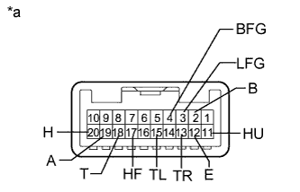

HEADLIGHT DIMMER SWITCH > INSPECTION |
| 1. INSPECT HEADLIGHT DIMMER SWITCH ASSEMBLY |
|  |
Inspect the light control switch.
Measure the resistance according to the value(s) in the table below.
| Tester Connection | Switch Condition | Specified Condition |
| 20 (H) - 12 (E) | Light control switch off | 10 kΩ or higher |
| 18 (T) - 12 (E) | ||
| 19 (A) - 12 (E) | ||
| 19 (A) - 12 (E) | Light control switch auto | Below 1 Ω |
| 18 (T) - 12 (E) | Light control switch tail | Below 1 Ω |
| 18 (T) - 12 (E) | Light control switch head | Below 1 Ω |
| 20 (H) - 12 (E) |
Inspect the headlight dimmer switch.
Measure the resistance according to the value(s) in the table below.
| Tester Connection | Switch Condition | Specified Condition |
| 11 (HU) - 12 (E) | Headlight dimmer switch flash | Below 1 Ω |
| 17 (HF) - 12 (E) | ||
| 11 (HU) - 12 (E) | Headlight dimmer switch hi beam | Below 1 Ω |
Inspect the turn signal switch.
Measure the resistance according to the value(s) in the table below.
| Tester Connection | Switch Condition | Specified Condition |
| 13 (TR) - 12 (E) | Turn signal switch right turn | Below 1 Ω |
| 13 (TR) - 12 (E) | Turn signal switch right lane change | Below 1 Ω |
| 13 (TR) - 12 (E) | Turn signal switch neutral | 10 kΩ or higher |
| 15 (TL) - 12 (E) | ||
| 15 (TL) - 12 (E) | Turn signal switch left lane change | Below 1 Ω |
| 15 (TL) - 12 (E) | Turn signal switch left turn | Below 1 Ω |
Inspect the fog light switch.
Measure the resistance according to the value(s) in the table below.
| Tester Connection | Switch Condition | Specified Condition |
| 4 (BFG) - 3 (LFG) | Fog light switch off | 10 kΩ or higher |
| 4 (BFG) - 3 (LFG) | Front fog light switch on | Below 1 Ω |
| 4 (BFG) - 3 (LFG) | Rear fog light switch on | Below 1 Ω |
| 2 (B) - 3 (LFG) |
| *a | Component without harness connected (Headlight Dimmer Switch Assembly) |